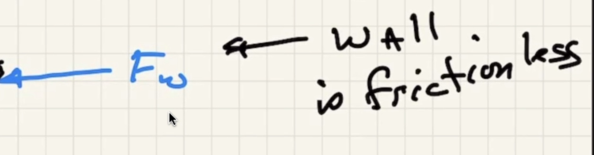
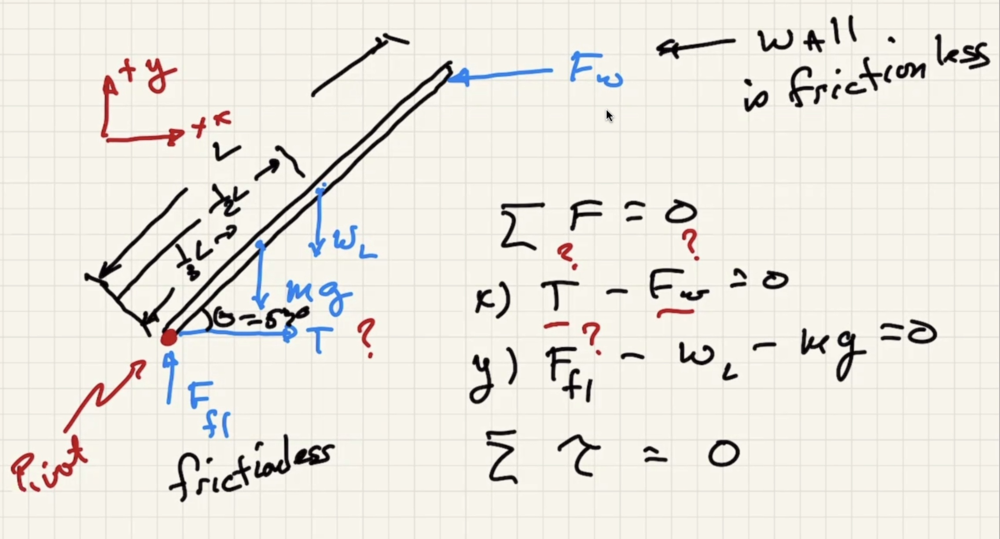

Announcements

Today
Clicker questions

Discussion
Weight of the beam is in the middle because it is uniform, and the center of mass is in the exact center.
Two conditions for equilibrium, x is positive to right y is positive to up.
Two equations and three unknowns. To get to the solution we need to use the sum of the torques = 0 also.
Choose any pivot point because the sum of the torques is zero. Choose the point that gets rid of as much unknowns as possible.
Choose rotational coordinate system. Clockwise will be positive torque.
Solve for
Look at the x component of the pivot
How to decide the direction of the torque? Lets say this is the setup:
If you ignore
The walls are frictionless and the rope at the bottom keeps it from sliding back.

What keeps it from falling is the tension in the rope.

When we choose the pivot point at the bottom it ends up getting rid of what we want, but before we showed that the tension is equal to the force the wall exerts at the top of the ladder.

CCW +, CW -
Finding the perpendicular force that causes torque:

Spinning to the left
Spinning to the right
Relationships to kinematics
Try this one: